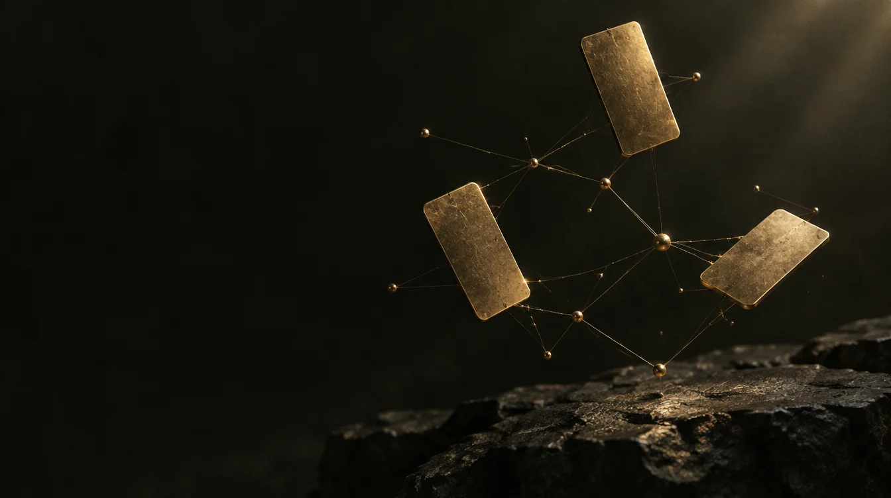

Student developer · Meridian, IdahoPORTFOLIO / 2026
RIVER HINE.
I build games with interlocking systems
and websites with a clear purpose.
Systems design · Web development

01 / Flagship project · In development
Inside the project Gilded Fate
A Unity deckbuilder. Three heroes. A web of choices.

The thread through my workSeparate ideas.
Concept artwork & motion made with Higgsfield · Not gameplaySeparate ideas.
Connected systems.
From a card’s effect to the choices that shape a run.
Explore the systems ↗02 / Selected workBuilt to learn.
Explore all work ↗Built to learn.
Made to be used.

03 / The person behind the projectsCurious by nature.
Curious by nature.
Persistent by practice.
I’m a student at Meridian Technical Charter High School, exploring game development, software, and useful ideas for the web. Outside of development, I play varsity tennis for Centennial High School.
I learn by building, testing, and refining. AI assists the process; I make the design decisions and integrate the results.
More about me ↗